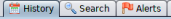

Failed Authentication (example)
Configre the proxy on the Browser, to intercept it with ZAP
Unauthorized Access
1. Go to the webpage Form login
2. History Tab → Request

3. History Tab → Response
Failed Authentication